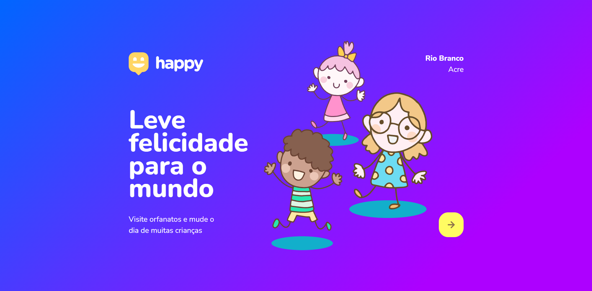
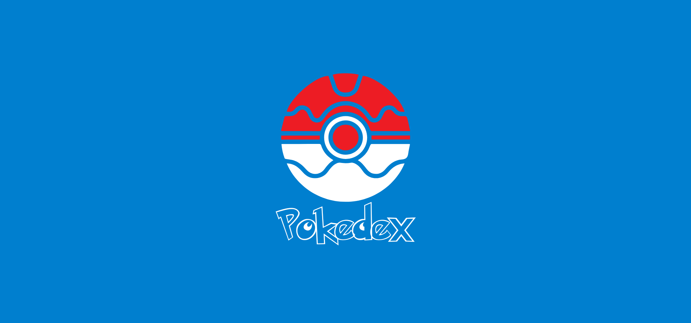

Olá Mundo, me chamo
Eduardo Batista
E eu sou
Sobre Mim
Me chamo Eduardo e sou um estudante em formação
Olá pessoal, muito prazer, eu me chamo Eduardo, Sou de Rio Branco, no Acre.
Bem-vindos ao meu portfólio!!
Atualmente, curso Engenharia de Software
e estou no 2° ano da faculdade. Minha jornada no mundo da
programação começou de forma bastante inusitada, desde pequeno
sempre gostei de carros e tinha vontade de atuar como engenheiro
mecânico.
Então, quando terminei meu ensino médio começei a procurar faculdades
na área, até encontrei, mas o alto valor das mensalidades me fizeram repensar
as opções. Foi então, que meu pai me perguntou se eu queria fazer algo na área
de Tecnologia e Programação. Depois de analisar as opções decidi ingressar no curso de Sistemas de
Infomação.
Tempos depois, resolvi mudar de curso, e hoje estou cursando Engenharia de Software,
e procurando me especializar como Desenvolvedor Web Front-End.
Download CV
Serviços
Web Design
Ofereço serviços dedicados a criar layouts visualmente agradáveis, funcionais, com as necessidades específicas de cada cliente. Meu objetivo é transformar uma abordagem centrada no usuário, garantindo uma experiência de navegação bem intuitiva.
Front-End
Desenvolvo interfaces especializados em entregar os sites responsivos, desde a codificação, até a implementação de animações e interações, garantindo uma experiência do usuário fluida e otimizada.
Montagem/Manutenção de Computadores e Notebooks
Realizo montagem e manutenção de Computadores e Notebooks. E Crio EFI's para Hackintosh
Experiência
Instituto de Previdência de Rio Branco (AC)
Set/2020 — Set/2021Estagiário de TI
- Suporte e manutenção de computadores
- Atendimento interno e resolução de demandas
- Rotinas de TI e organização de recursos
Grupo Barriga Verde
Out/2021 — (breve)Estagiário de TI
- Suporte técnico e manutenção
- Apoio a usuários e demandas do dia a dia
Boomi (São Paulo)
2021 — Estágio (Home Office)Estágio em Desenvolvimento Web
- Atuação mais focada em desenvolvimento web
- Implementação de páginas e melhorias de interface
- Experiência prática em projetos reais
Sistema OCB
2024 (atual) — Estágiário de TIEstágiário de TI
- Suporte e manutenção de computadores
- Atendimento interno e resolução de demandas
- Rotinas de TI e organização de recursos
- Atendimento as cooperativas
Habilidades
Minhas habilidades criativas
Tenho foco em desenvolvimento Web e venho evoluindo diariamente no Front-End.
Meu objetivo é criar interfaces bonitas, responsivas e fáceis de usar, com atenção
a performance e boa experiência do usuário.
Atualmente estudo e aplico tecnologias como HTML, CSS e
JavaScript,
e estou me aprofundando em React. Também venho explorando o desenvolvimento mobile com
React Native.
Gosto de aprender construindo projetos reais e melhorando minhas bases de lógica, componentização
e boas práticas de código.
Meus Projetos


Meus Certificados


Contato
Gostou de mim?
Obrigado por ter chegado até aqui e conhecido um pouco da minha trajetória. Seria um prazer poder compartilhar mais sobre mim e adquirir experiência enfrentando desafios no Desenvolvimento Web.
Nome
Eduardo Batista
Endereço
Rio Branco, Acre
Email
edubatista107@gmail.com
Fale comigo